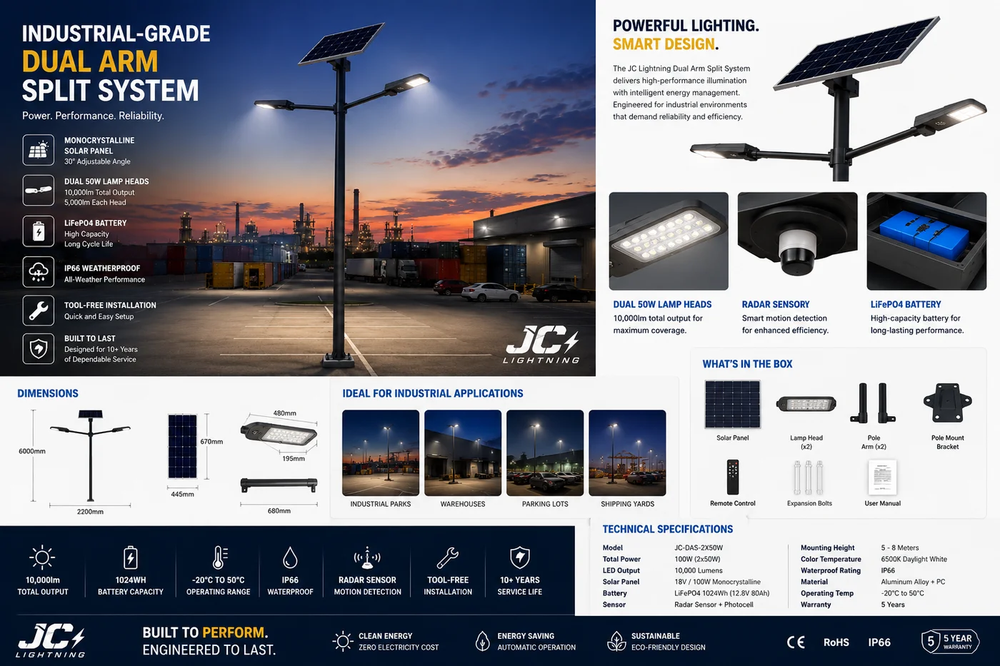

Split Solar Street Light (30/60/100W)
A split-type street light with a separate panel and lamp head 鈥?for flexible installation and easy maintenance. 3,000鈥?0,000 lumens, IP66, radar sensing and a LiFePO4 battery, pole mount included.

The split design solves two problems the all-in-one can't. First, the panel mounts independently 鈥?so it can be angled to the sun even when the road runs the "wrong" way or trees shade the pole. Second, maintenance is simpler: the lamp head services separately. With output up to 10,000 lumens, it scales from rural paths to main municipal roads.
Specifications
| Power options | 30W / 60W / 100W |
|---|---|
| Luminous flux | 3,000鈥?0,000 lm |
| Sensor | Microwave radar |
| IP rating | IP66 鈥?dust-tight, high-pressure water resistant |
| Battery | LiFePO4 |
| Runtime | 10鈥?2 hours; dusk-to-dawn auto |
| Mounting | Pole mount included; separate panel |
| Certification | CE + RoHS |
Why buyers choose it
Angle the panel anywhere. A separate panel captures more sun on shaded or awkwardly-oriented streets 鈥?more reliable runtime year-round.
Easy maintenance. Serviceable lamp head reduces lifetime cost on large municipal deployments.
Up to 10,000 lumens. Covers main roads, not just side streets 鈥?one product line for a whole tender.
Certified & OEM-ready. CE + RoHS with every quotation; power and branding customisable. Why LiFePO4 matters 鈫?/a>